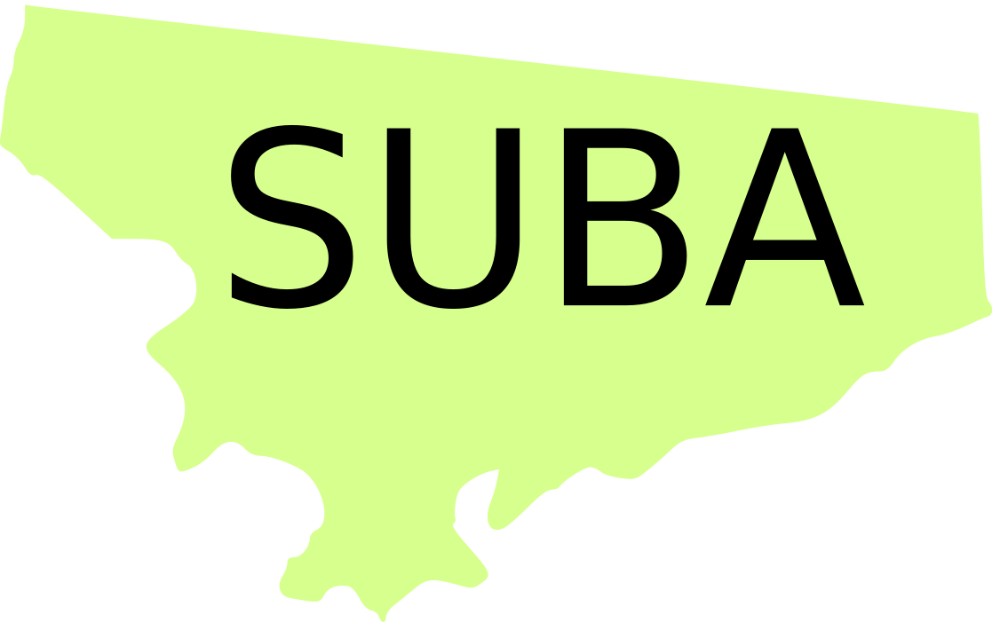

Carlos Fiquitiva
La presentación
Carlos Fiquitiva
La presentación
Choá!!
Vamos a aprander como pesentarnos en muysccubun, para empezar te contaremos que en la lengua muisca el verbo va al final de la oración, por tal motivo nuestra primera frase se compondrá de tres partes:
Continuar
Esta construcción en español significa 'mi nombre' es la primera parte de nuestra frase de presentación.
Continuar
En la mitad de nuestra frase de presentación encontramos nuestro nombre, para esta frase de ejemplo tomaremos el nombre de Diana Garibello.
Entonces, hasta este momento tenemos "zehyca Diana Garibello" que en español traduciría: "Mi nombre Diana Garibello"
Continuar
Esta es la construcción verbal utilizada en muysca para "es" o "soy" y el último componenete de nuestra frase de presentación, lo que quiere decir que para decir "mi nombre es ~~" decimos:
Continuar
*****
Zehyca Diana Garibello gueContinuar
Ya sabes como presentarte en muysccubun, ahora queremos que lo practiques, por favor escribe lo que aprendimos utilizando tu nombre y apellido.
Ipqua!!
Ahora vamos a aprander como decir donde vivimos en muysccubun, nuestra segunda frase también se divide en tres partes:
Continuar
esta expresión en español significa "nativo".
Continuar
En la segunda parte de nuestra oración va el lugar donde vivimos es "cha Suba" que literalmente traduciría:"nativo Suba"
Continuar
Esta es la construcción verbal utilizada en muysca para "es" o "soy" y el último componenete de nuestra segunda frase, lo que quiere decir que para decir "soy de ~~" decimos:
Continuar
*****
Cha Suba gue Continuar
Ya sabes como decir el lugar de donde eres en muysccubun, ahora queremos que lo practiques, por favor escribe lo que aprendimos, utilizando el lugar.
Ipqua!!
Ya tenemos las dos frases que construiran nuestra presentación en lengua muysca ahora vamos a aprender a conectarlas
Continuar
Será la palabra enmuysca que nos conectara las dos frases que aprendimos
Continuar
Zehyca Fernando Fiquitiva gue nga cha Suba gue
Continuar
Para practicar te proponemos que nos compartas tu presentación escribiendo tu nombre y lugar de procedencia
Te felicitamos por tu avance, como dato adicional te contamos que en muysca para preguntar por el nombre de otra persona decimos:
Ipqua ahyca
Continuar
Ahora te invitamos a pasar a nuestra proxima lección
Agrademientos↵
↵
↵